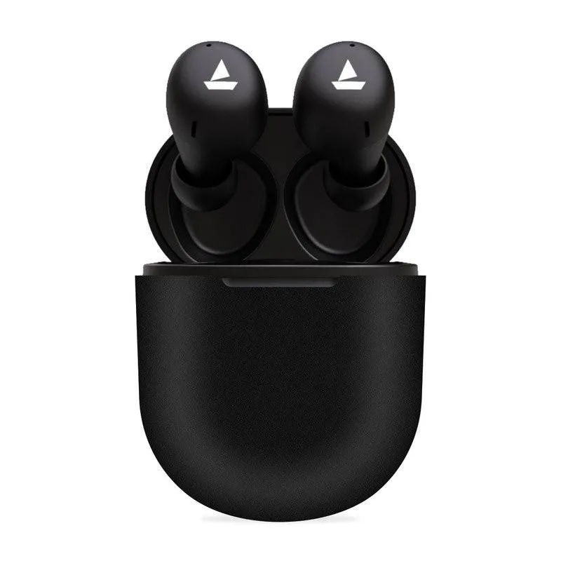
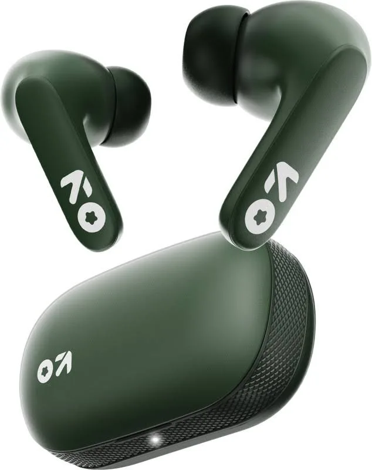
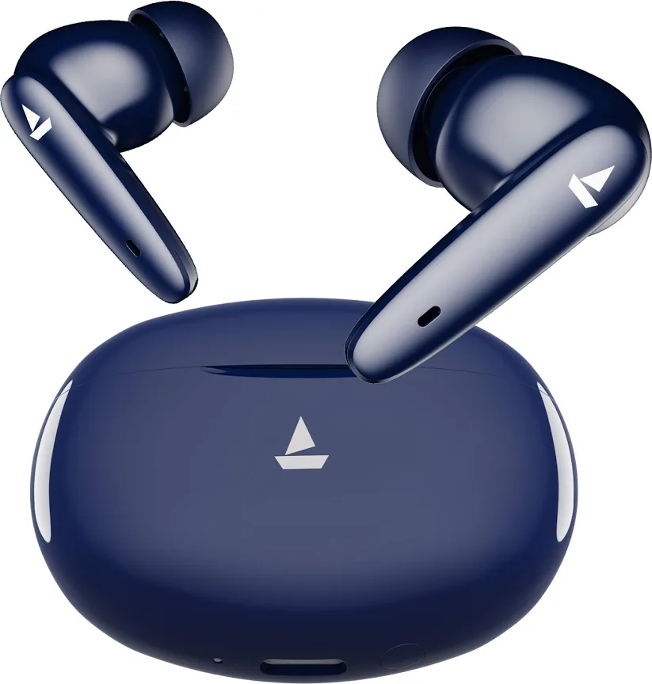
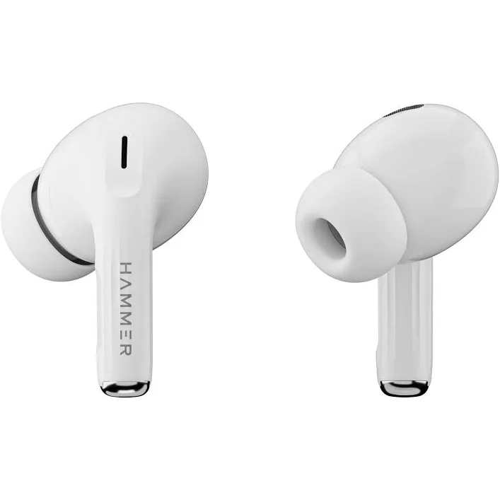
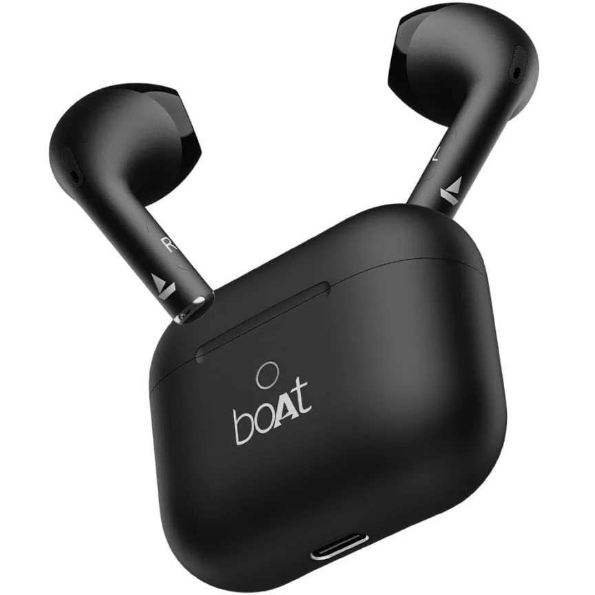

Looking for the best earbuds under ₹1000? We compared the most popular budget earbuds based on sound quality, battery life, calling performance, comfort and overall value for money.
| Earbuds | Battery | Calling | Best For | User Rating | Expert Rating |
|---|---|---|---|---|---|
| boAt Airdopes 141 | 42 Hours | ENx | Overall Use | ⭐⭐⭐⭐⭐ (4.5/5) | 8.9/10 |
| Boult Y1 | 40 Hours | ENC | Calling | ⭐⭐⭐⭐☆ (4.4/5) | 8.7/10 |
| boAt Airdopes 161 Pro | 50 Hours | Good | Battery | ⭐⭐⭐⭐☆ (4.4/5) | 8.8/10 |
| boAt Airdopes Joy | 35 Hours | Students | Budget | ⭐⭐⭐⭐☆ (4.2/5) | 8.3/10 |
| Hammer Aeromax ANC | 30 Hours | Good | Features | ⭐⭐⭐⭐☆ (4.3/5) | 8.6/10 |

User Rating: ⭐⭐⭐⭐⭐ (4.5/5)
Expert Rating: 8.9/10
PickSmarter Score: 92/100

User Rating: ⭐⭐⭐⭐☆ (4.4/5)
Expert Rating: 8.7/10
PickSmarter Score: 90/100

User Rating: ⭐⭐⭐⭐☆ (4.4/5)
Expert Rating: 8.8/10
PickSmarter Score: 91/100

User Rating: ⭐⭐⭐⭐☆ (4.3/5)
Expert Rating: 8.6/10
PickSmarter Score: 89/100

User Rating: ⭐⭐⭐⭐☆ (4.2/5)
Expert Rating: 8.3/10
PickSmarter Score: 86/100
If you want the best overall earbuds under ₹1000, choose the boAt Airdopes 141.
If battery life is your top priority, boAt Airdopes 161 Pro is the best option.
If you want maximum value for money, Boult Y1 offers excellent calling quality and battery life.
If you want premium features like ANC, Hammer Aeromax ANC is worth considering.
Students looking for affordable everyday earbuds can choose boAt Airdopes Joy.
Choose earbuds with at least 30–40 hours of total battery backup for long usage.
ENC or ENx technology helps improve voice clarity during calls and meetings.
Bluetooth 5.3 provides faster pairing, better connectivity and improved battery efficiency.
Lightweight earbuds with ergonomic design are more comfortable for long listening sessions.
Low latency gaming mode reduces audio delay and improves gaming performance.